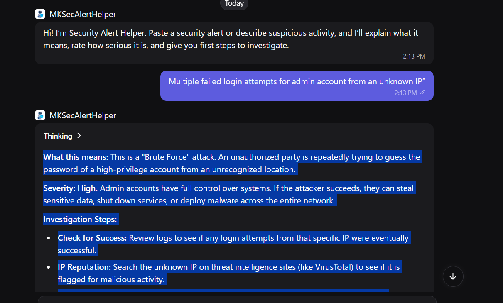

Security Alert Helper: An AI Chatbot for Junior SOC Analysts
A working AI chatbot I built that helps new Security Operations Center (SOC) analysts understand security alerts and decide what to do first.

Description
Users paste a security alert or describe suspicious activity. The chatbot explains what the alert means in simple language, rates how serious it is (Low, Medium, or High) with a reason, lists 3 to 5 first investigation steps, and reminds the user to follow their organization's incident response policy. For example, when I tested it with multiple failed admin logins from an unknown IP, it identified a likely brute force attack, rated it High, and suggested checking for successful logins, checking the IP's reputation, and looking for password spraying. The full project documentation, including all tests and results, is available to download above.
Objective
I created this chatbot to solve a real problem I saw during my SOC training: new analysts receive many technical alerts and are often unsure how serious they are or what to do first. I wanted to see whether a simple AI assistant could help them respond faster and with more confidence.
Tools and Technologies Used
Process
I used design thinking. I started with the struggles of new analysts, wrote a clear problem statement, and compared three assistant ideas before choosing this one. I built the bot on Poe and wrote specific instructions for how it should respond, then added a greeting message. I ran into real obstacles: my first attempt did not create a shareable bot, the default model cost more points than my free account allowed, and my daily points ran out during testing. I rebuilt the bot with a lower-cost model and planned testing around the daily reset. Finally, I tested it with realistic security alerts and an off-topic question to check that it followed its instructions.
Value Proposition
This chatbot gives junior SOC analysts a fast, plain-language guide to any security alert, helping them prioritize threats and take the right first steps without waiting for a senior analyst.
Unique Value: Combines my cybersecurity training with hands-on generative AI skills. It is a live product that anyone can try, not just a description of an idea, and it shows how I adapted when free-tool limits got in the way.
Relevance: Security teams receive more alerts than they can easily handle, and AI assistants are becoming common tools in SOC work. This project shows skills that matter for both cybersecurity and AI development roles, while keeping human judgment and official procedures at the center.
References
AIML-500 AI Lab Guided Activity and course materials; Poe platform; Full Stack Academy SOC course materials